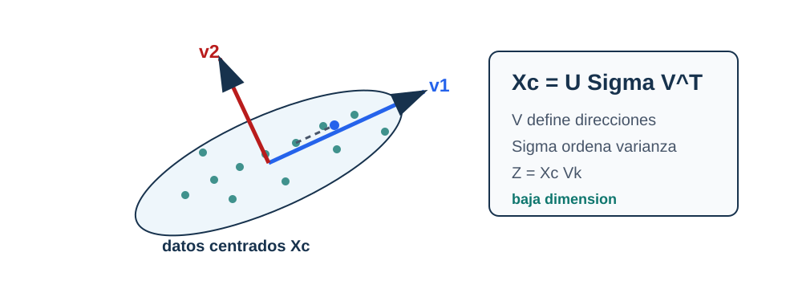

SVD y PCA
Pregunta aplicada
Un dataset puede tener decenas o miles de variables. ¿Podemos representarlo en menos dimensiones sin perder la estructura principal?
PCA responde:
buscar direcciones ortogonales que capturan la mayor varianza posible.

Lectura de la figura. PCA empieza con datos centrados, usa la SVD para encontrar direcciones de alta varianza y proyecta sobre \(V_k\). La proyección puede servir para visualizar, comprimir o alimentar otro modelo, pero no prueba causalidad.
Objetivos del capítulo
Al terminar este capítulo deberías poder:
- escribir la SVD de una matriz;
- explicar por qué PCA requiere centrar datos;
- calcular la forma de una proyección \(Z=X_cV_k\);
- interpretar varianza explicada y error de reconstrucción;
- distinguir reducción de dimensión de interpretación causal.
- derivar las direcciones principales mediante un problema restringido;
- comparar la descomposición por covarianza con una SVD directa en costo y estabilidad.
PCA poblacional y PCA empírico
Sea \(X\in\mathbb R^p\) un vector aleatorio con media \(\mu\) y matriz de covarianza
\[ \Sigma=\mathbb E[(X-\mu)(X-\mu)^\top]. \]
La primera dirección principal poblacional resuelve
\[ v_1^*=\arg\max_{\lVert v\rVert_2=1} \operatorname{Var}(v^\top X) =\arg\max_{\lVert v\rVert_2=1}v^\top\Sigma v. \]
Por el cociente de Rayleigh, \(v_1^*\) es un autovector asociado al mayor autovalor de \(\Sigma\). No conocemos \(\Sigma\); con una muestra usamos
\[ \widehat\Sigma_m=\frac1mX_c^\top X_c. \]
Si \(X_c=U\Sigma_sV^\top\) es la SVD, entonces
\[ \widehat\Sigma_m =V\frac{\Sigma_s^2}{m}V^\top. \]
Así, los vectores singulares derechos son direcciones principales empíricas y \(\sigma_j^2/m\) son autovalores de la covarianza empírica. Cambiar la muestra puede cambiar direcciones, especialmente cuando autovalores consecutivos son cercanos.
Máxima varianza empírica. Para \(X_c\) centrada,
\[ \max_{\lVert v\rVert=1}\frac1m\lVert X_cv\rVert_2^2 =\frac{\sigma_1^2}{m}, \]
y cualquier primer vector singular derecho alcanza el máximo.
La afirmación se obtiene con multiplicadores de Lagrange. Para una matriz de covarianza simétrica \(\Sigma\), maximizamos \(v^\top\Sigma v\) sujeto a \(v^\top v=1\). La función de Lagrange es
\[ \mathcal L(v,\lambda) =v^\top\Sigma v-\lambda(v^\top v-1). \]
Su condición estacionaria respecto a \(v\) es
\[ 2\Sigma v-2\lambda v=0, \]
de modo que una dirección candidata debe satisfacer \(\Sigma v=\lambda v\). Además, en un autovector unitario,
\[ v^\top\Sigma v=\lambda. \]
Por tanto, el máximo corresponde al mayor autovalor. Para \(k\) direcciones ortonormales, el problema se escribe
\[ \max_{V_k^\top V_k=I_k} \operatorname{tr}(V_k^\top\Sigma V_k), \]
y el máximo es la suma de los \(k\) mayores autovalores. Si hay autovalores repetidos, el subespacio principal está determinado, pero una base particular dentro de él no es única.
La indeterminación de signo de un componente no es incertidumbre muestral: \(v\) y \(-v\) describen el mismo eje. La inestabilidad entre subespacios al cambiar la muestra sí es una cuestión estadística y debe estudiarse por remuestreo o particiones.
SVD
Para una matriz \(X \in \mathbb{R}^{m \times p}\), su SVD reducida puede escribirse:
\[ X = U_r\Sigma_r V_r^\top, \]
donde \(r=\operatorname{rank}(X)\), \(U_r\in\mathbb R^{m\times r}\), \(\Sigma_r\in\mathbb R^{r\times r}\) y \(V_r\in\mathbb R^{p\times r}\).
Donde:
- \(U\) contiene direcciones en el espacio de observaciones;
- \(\Sigma\) contiene valores singulares no negativos;
- \(V\) contiene direcciones en el espacio de variables.
PCA como SVD del dato centrado
Primero centramos cada columna con el vector de medias \(\mu\in\mathbb R^p\):
\[ X_c = X - \mathbf 1_m\mu^\top. \]
Luego:
\[ X_c = U\Sigma V^\top. \]
Los componentes principales son las primeras filas de \(V^\top\), o columnas de \(V\), asociadas a los valores singulares más grandes.
Centrar no es una formalidad. Sin centrado se maximiza \(m^{-1}\|Xv\|^2\), que mezcla variación con la distancia del promedio al origen. La primera dirección puede entonces apuntar hacia la media de las observaciones, no hacia la dirección en que fluctúan alrededor de ella. Si además se estandarizan columnas, PCA analiza la matriz de correlaciones y responde una pregunta distinta: cada variable aporta en unidades de desviación estándar en lugar de conservar su escala original.
Proyección
Si tomamos \(k\) componentes:
\[ Z = X_c V_k. \]
Aquí \(Z \in \mathbb{R}^{m \times k}\) es la representación reducida.
Varianza explicada
La varianza explicada por el componente \(j\) es proporcional a:
\[ \sigma_j^2. \]
La razón de varianza explicada:
\[ \frac{\sigma_j^2}{\sum_{\ell}\sigma_\ell^2}. \]
Con la convención de covarianza empírica \(1/m\), el autovalor es \(\widehat\lambda_j=\sigma_j^2/m\); el factor \(1/m\) se cancela en la razón. Por eso la fórmula es exacta para la muestra observada, pero no afirma qué proporción de varianza explicaría otra muestra de la población.
Ejemplo resuelto: error desde valores singulares
Supón que una matriz centrada tiene valores singulares:
\[ \sigma_1=9,\qquad \sigma_2=4,\qquad \sigma_3=1. \]
La energía total bajo la norma de Frobenius es:
\[ 9^2+4^2+1^2=98. \]
Si usamos solo \(k=1\), descartamos \(\sigma_2\) y \(\sigma_3\). El error de reconstrucción cuadrático es:
\[ 4^2+1^2=17. \]
La varianza explicada acumulada por el primer componente es:
\[ \frac{9^2}{98}\approx 0.827. \]
La lectura tiene dos partes: un componente conserva cerca de 82.7% de la variabilidad medida por PCA, pero todavía descarta una parte que puede ser importante para ciertos grupos, variables o decisiones posteriores.
Derivación guiada: reconstrucción y pérdida de información
Si usamos \(k\) componentes, retenemos:
\[ X_c \approx U_k\Sigma_kV_k^\top. \]
La parte descartada corresponde a componentes \(k+1,\ldots,r\). Bajo la norma de Frobenius, el error de reconstrucción queda ligado a los valores singulares descartados:
\[ \|X_c-\hat X_c\|_F^2=\sum_{j=k+1}^{r}\sigma_j^2. \]
El teorema de Eckart-Young establece que esta reconstrucción truncada minimiza el error de Frobenius entre todas las matrices de rango a lo sumo \(k\). Esta fórmula explica por qué la varianza explicada acumulada y el error de reconstrucción son dos caras del mismo cálculo. Retener pocos componentes puede ser útil para visualizar, pero siempre descarta variación.
Una forma de ver el resultado usa proyecciones ortogonales. Sea \(B\) una matriz de rango a lo sumo \(k\) y sea \(S\) su espacio columna. Entre todas las matrices cuyas columnas pertenecen a \(S\), la más cercana a \(X_c\) es \(P_SX_c\), donde \(P_S\) es la proyección ortogonal sobre \(S\). Por Pitágoras,
\[ \|X_c-P_SX_c\|_F^2 =\|X_c\|_F^2-\|P_SX_c\|_F^2. \]
Minimizar el error equivale entonces a escoger un subespacio de dimensión \(k\) que capture la mayor energía \(\|P_SX_c\|_F^2\). La caracterización variacional aplicada a \(X_cX_c^\top\) selecciona \(S=\operatorname{span}(u_1,\ldots,u_k)\), las primeras direcciones singulares izquierdas. Si \(X_c=U\Sigma V^\top\),
\[ P_SX_c =U_kU_k^\top U\Sigma V^\top =U_k\Sigma_kV_k^\top. \]
El error restante es \(\sum_{j>k}\sigma_j^2\). Esta es una justificación de optimalidad respecto a error cuadrático de reconstrucción, no respecto a clasificación, interpretabilidad o utilidad de una variable minoritaria.
Costo y elección del método numérico
Hay dos rutas densas comunes. Formar la covarianza \(X_c^\top X_c/m\) cuesta \(O(mp^2)\) y diagonalizarla cuesta \(O(p^3)\). Una SVD directa evita formar la covarianza y no eleva al cuadrado el número de condición. Si \(m\geq p\), su costo denso también es del orden de \(O(mp^2)\); si \(p\gg m\), puede ser preferible trabajar con \(X_cX_c^\top\) o con una SVD truncada.
Cuando solo se necesitan \(k\ll\min(m,p)\) componentes, algoritmos iterativos o aleatorizados aproximan el subespacio dominante sin calcular toda la SVD. Deben verificarse con error de reconstrucción y estabilidad, porque ahora aparece una aproximación algorítmica adicional a la variación muestral.
| Elección | Ventaja | Riesgo principal |
|---|---|---|
| autodescomposición de covarianza | conecta directamente con varianza | forma \(X_c^\top X_c\) y empeora condicionamiento |
| SVD directa de \(X_c\) | mayor estabilidad numérica | puede ser costosa si solo se requieren pocos componentes |
| SVD truncada | aprovecha \(k\) pequeño | agrega tolerancia y posible error aproximado |
El ajuste del centrado, el escalamiento y los componentes debe ocurrir dentro de cada conjunto de entrenamiento. Proyectar validación o test usa las medias, escalas y direcciones ya aprendidas; recalcularlas sería leakage.
Ejemplo resuelto: elegir \(k\)
Supón que los primeros componentes explican:
| Componente | Varianza explicada | Acumulada |
|---|---|---|
| 1 | 0.42 | 0.42 |
| 2 | 0.23 | 0.65 |
| 3 | 0.12 | 0.77 |
| 4 | 0.06 | 0.83 |
Si la meta es visualizar, \(k=2\) puede ser suficiente. Si la meta es reconstruir con poca pérdida, \(k=4\) puede ser más razonable. La elección depende del uso posterior y de una tolerancia declarada, no de un porcentaje universal.
Reconstrucción
Con \(k\) componentes:
\[ \hat X_c = ZV_k^\top. \]
La reconstrucción en escala original:
\[ \hat X = \hat X_c + \mathbf 1_m\mu^\top. \]
El error de reconstrucción ayuda a medir pérdida de información.
Ejemplo resuelto: proyección y reconstrucción
Considera dos observaciones con dos variables:
\[ X= \begin{bmatrix} 2&0\\ 0&2 \end{bmatrix}. \]
Primero centramos por columnas. La media es \(\bar X=(1,1)\), entonces:
\[ X_c= \begin{bmatrix} 1&-1\\ -1&1 \end{bmatrix}. \]
Una dirección principal para estos datos es
\[ v_1=\frac{1}{\sqrt 2} \begin{bmatrix} 1\\ -1 \end{bmatrix}. \]
La proyección con \(k=1\) es:
\[ Z=X_cv_1= \begin{bmatrix} \sqrt 2\\ -\sqrt 2 \end{bmatrix}. \]
La reconstrucción centrada queda:
\[ \hat X_c = Zv_1^\top = \begin{bmatrix} 1&-1\\ -1&1 \end{bmatrix}. \]
Al sumar la media:
\[ \hat X = \begin{bmatrix} 2&0\\ 0&2 \end{bmatrix}. \]
En este ejemplo la reconstrucción con un componente es exacta porque los datos centrados tienen rango 1. En un dataset real, \(k=1\) normalmente conserva solo una parte de la variación.
Caso longitudinal: PCA sintético
El archivo pca_sintetico.csv contiene cuatro variables generadas desde una estructura latente de baja dimensión. El ejercicio consiste en justificar qué se conserva y qué se pierde.
| Resultado | Pregunta |
|---|---|
| media de entrenamiento | ¿con qué parámetros se centró? |
| varianza explicada acumulada | ¿cuántos componentes se retienen? |
| error de reconstrucción | ¿qué se pierde al reducir dimensión? |
| cargas principales | ¿qué variables dominan cada componente? |
| advertencia | ¿qué interpretación causal no se puede afirmar? |
Si los dos primeros componentes explican mucha varianza, puedes usarlos para visualizar o comprimir. Eso no significa que los componentes sean causas, grupos naturales o factores reales del dominio. Esa lectura requiere información de dominio adicional.
PCA no es interpretabilidad automática
Un componente principal es una combinación lineal de variables. Puede ser útil, pero no siempre tiene una interpretación humana directa.
Interpretar PCA requiere:
- revisar cargas de variables;
- medir varianza explicada;
- visualizar proyecciones;
- conectar componentes con el dominio.
Además, el signo de cada componente es arbitrario: si \(v_j\) es una dirección principal, \(-v_j\) representa el mismo eje y produce scores con signo opuesto. Dos implementaciones pueden diferir en esos signos y tener idéntica reconstrucción. Las pruebas deben comparar el subespacio o la reconstrucción, no forzar una orientación.
Punto de control
Antes de usar PCA en un proyecto, responde:
- ¿centraste con parámetros aprendidos en entrenamiento?
- ¿cuánta varianza explican los componentes usados?
- ¿la proyección se usa para visualizar, modelar o comprimir?
- ¿qué interpretación no puedes afirmar?
Verificaciones seleccionadas
- Si \(X\) tiene forma \(500\times 64\) y se usan \(k=2\) componentes, la proyección \(Z=X_cV_k\) tiene forma \(500\times 2\).
- Si los primeros 10 componentes explican 85% de la varianza, todavía se pierde 15% de la variabilidad bajo esa medida.
- Un scatterplot PCA 2D puede sugerir separación visual, pero no prueba causalidad ni garantiza buen desempeño predictivo.
Ejemplo resuelto: PCA dentro de un pipeline
Si PCA se usa antes de un clasificador, el centrado y los componentes deben aprenderse solo con entrenamiento. En scikit-learn, la forma segura es:
Pipeline([
("scaler", StandardScaler()),
("pca", PCA(n_components=10)),
("model", LogisticRegression())
])En validación cruzada, cada fold aprende su propio scaler y su propio PCA con el train fold. Hacer PCA con todo el dataset antes de partir datos introduce leakage porque la proyección ya vio validación o test.
StandardScaler también cambia la geometría: PCA sobre variables estandarizadas equivale a trabajar sobre correlaciones, mientras PCA solo centrado conserva las unidades y puede quedar dominado por variables de gran varianza. La elección debe declararse.
Para explorar más
- Extensión matemática: reconstruye una matriz pequeña con rango 1 y compara el error de reconstrucción con el de rango 2.
- Extensión computacional: grafica varianza explicada acumulada y marca el punto donde agregar componentes deja de cambiar la interpretación.
- Conexión con proyecto: decide si PCA se usará para visualización, compresión, diagnóstico o como paso previo de modelado.
Revisión del capítulo
SVD factoriza una matriz en direcciones y magnitudes de variación. PCA usa esa estructura sobre datos centrados para construir proyecciones de baja dimensión que conservan tanta varianza como sea posible bajo el número de componentes elegido.
La forma de los objetos importa: \(V_k\) define direcciones, \(Z=X_cV_k\) contiene scores y la reconstrucción aproxima los datos originales. La varianza explicada ayuda a elegir \(k\), pero no convierte automáticamente los componentes en causas o conceptos de dominio.
PCA es una herramienta de compresión, visualización o preprocesamiento. Su uso exige declarar qué conserva, qué pierde y qué interpretación no está justificada por la proyección.
Términos clave
- SVD: factorización \(X=U\Sigma V^\top\) que expone direcciones principales.
- PCA: proyección lineal que conserva la mayor varianza posible en pocas dimensiones.
- Dato centrado: matriz después de restar la media de cada variable.
- Componente principal: dirección lineal de alta varianza.
- Varianza explicada: proporción de variabilidad capturada por componentes.
- Reconstrucción: aproximación del dato original desde una proyección de baja dimensión.
Ejercicios
Preguntas conceptuales
- Explique por qué PCA debe centrar los datos antes de calcular componentes.
- ¿Por qué un componente principal no es automáticamente interpretable?
Problemas cuantitativos
- Si \(X\) tiene forma
(500, 64)y usamosk=2, ¿qué forma tiene la proyección PCA? - ¿Qué significa que los primeros 10 componentes expliquen 85% de la varianza?
Práctica computacional
- Implemente una proyección PCA usando SVD sobre datos centrados.
- Calcule y grafique varianza explicada acumulada.
Interpretación y pensamiento crítico
- Si dos componentes explican poca varianza pero separan visualmente grupos, ¿qué conclusión puede y no puede afirmar?
Profundización matemática y algorítmica
- Use multiplicadores de Lagrange para derivar el problema de máxima varianza de la primera dirección principal.
- Demuestre que el problema de \(k\) direcciones maximiza la traza \(\operatorname{tr}(V_k^\top\Sigma V_k)\).
- Explique el argumento central de Eckart-Young y distinga optimalidad de reconstrucción de utilidad predictiva.
- Compare costo y estabilidad de formar la covarianza frente a calcular la SVD directa de la matriz centrada.
Proyecto de cierre
- Aplique PCA a un dataset de su proyecto o a uno pequeño generado para práctica, justifique \(k\), muestre una proyección y escriba una advertencia de interpretación.